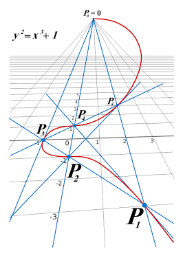

Criptografía
Si solo buscas invertir o usar las criptomonedas como una nueva forma
de pago, entonces solo necesitas saber el proceso sin entrar a detalles aqui en este capitulo.
Si decides leerlo todo (muy bien por eso xd), no te explicare a detalle (con rigor matemático) sobre Criptografía ya que este humilde
curso está enfocado a las criptomonedas pero igualmente voy a explicar todo lo necesario.
Claves públicas y privadas
Antes de esto, deberia explicar lo que es un hash pero eso ya lo explique en el
módulo 2. Puedes leerlo de nuevo si te olvidastes.
Te pondré una analogía para que lo entiendas rápido. Piensa en un buzón de correo:
- Clave Privada (es secreto): Es como la llave física con la que abres el buzón. Un
número aleatorio gigantesco (de 256 bits). Quien la posee, controla los fondos.
Nunca se comparte con nadie. Si no sabes que es 1 bit: El bit es la unidad de
información más pequeña que se usa en internet.
- Clave Pública: Es como la dirección de tu casa.
Se genera a partir de la clave privada y sirve para que otros te identifiquen o
para generar tu "dirección para recibir pagos". Es 100% seguro compartirla.
En el mundo cripto, no usas la clave privada para "cifrar" mensajes en sí, sino para firmar transacciones.
La firma prueba que posees la clave privada sin necesidad de revelarla.
Curvas Elípticas o Elliptic Curve Cryptography (ECC)

Una curva elíptica es una ecuación matemática de la forma general.
Si tienes curiosidad, esta es la fórmula: y2 = x3 + ax + b
En el caso de criptomonedas como Bitcoin o Ethereum, se utiliza una curva
específica llamada secp256k1, donde a=0 y b=7:
y2 = x3 + 7
¿Cómo funciona la magia matemática?
En esta curva se define una operación matemática especial llamada multiplicación de puntos:
K = k . G
1. Tienes un punto de inicio fijo en la curva llamado Punto Generador (G)
2. Tu Clave Privada (k minúscula) es un número entero aleatorio muy grande
3. Para obtener tu Clave Pública (K mayúscula), multiplicas el punto G por tu clave privada k:
En otras palabras:
- k (Clave Privada): Un número entero (ej. 33840)
- G (Punto Inicial): Una coordenada en la curva (ej. (802, 159))
- K (Clave Pública): La coordenada final en la curva a la que llegas (ej. (103542,10994)).
Considero que eso es lo necesario que hay que saber sobre criptografía para
entender las criptomonedas.
Firmas digitales
Una firma digital es el equivalente matemático a tu firma de siempre, pero con una
propiedad fundamental: es imposible de falsificar o copiar y pegar en otro documento.
En el mundo de las criptomonedas, una firma digital cumple dos objetivos esenciales:
- Probar propiedad: Demuestra que tú y solo tú posees la clave privada para
autorizar el gasto de esos fondos
- Garantizar la integridad: Asegura que nadie alteró los datos de la transacción
(monto, destinatario, etc.)
¿Cómo se crea y verifica una firma?
Primero:
Tu billetera toma el hash de la transacción y lo combina con tu clave
privada (k) usando el algoritmo de curva elíptica (ECDSA-Elliptic Curve Digital Signature Algorithm)
El resultado de esta operación matemática es una combinación de dos números
muy grandes que juntos forman la Firma Digital. Esta firma se adjunta a la
transacción y se transmite a toda la red.
Segundo
Cualquier nodo recibe: Los datos de la transacción ("Enviar 0.1 BTC a
Thiago"), tu Clave Pública (K) y la Firma Digital.
Tercero
El nodo introduce estos tres datos en la fórmula de las curvas elípticas
que responderá con un simple SÍ o NO:
=> Si dice SÍ: Confirma que la persona que tiene la clave privada vinculada a
esa clave pública aprobó exactamente esa transacción.
=> Si alguien intenta alterar la transacción (por ejemplo, cambiar "0.1 BTC" por
"1 BTC"), la firma se rompe inmediatamente y la red rechaza la operación.
Entonces, cuál es el proceso completo?
Fase 1: Creación de la Identidad (Tus Claves)
Todo comienza cuando instalas y abres una wallet de criptomonedas por primera vez:
1. Tu wallet genera un número aleatorio masivo de 256 bits. Este número es tu
Clave Privada (k)
2. La wallet aplica la fórmula de multiplicación de puntos K = k . G usando
el punto generador fijo ($G$). El resultado es otra coordenada en la curva: tu
Clave Pública (K).
3. Para no mostrar la clave pública directamente y hacerla más corta, la clave
pública pasa por dos funciones de Hash (SHA-256 y RIPEMD-160). El resultado final
es la Dirección de tu Wallet (ejemplo: 1A1zP1eP5QGefi2DMPTfTL5SLmv7DivfNa)
Fase 2: Creación y Firma de una Transacción
Supongamos que quieres enviar 0.1BTC a un amigo:
1. Creación del Mensaje: La wallet crea el borrador de la transacción con:
el origen (tu dirección), el destino (la dirección de tu amigo) y el monto (0.5 BTC)
2. Se aplica la función hash SHA-256 a los datos de la transacción y al resultado
se le llama Hash de transacción.
3. La wallet toma el Hash de la Transacción y lo combina matemáticamente con tu
Clave Privada (k). Esto genera dos números gigantes llamados (r, s) que componen
la Firma Digital.
4. La wallet emite a la red de computadoras (nodos) un paquete con tres elementos:
Los Datos de la Transacción, tu Clave Pública (K) y la Firma Digital (r, s).
5. Tu paquete (Datos + Clave Pública + Firma) llega a un nodo de la red.
6. El nodo toma la Clave Pública (K), el Hash de la transacción y los números
(r, s) y hace el cálculo matemático de verificación de la curva elíptica.
7. Si el cálculo da "SÍ", el nodo retransmite el paquete a los demás nodos hasta
que llega a la Mempool que es como una sala de espera.
8. Ahí entra el minero a tomarla de la Mempool y empaquetarla junto con miles de
otras transacciones. Lo que sigue es la minería que te lo explico en el siguiente módulo.